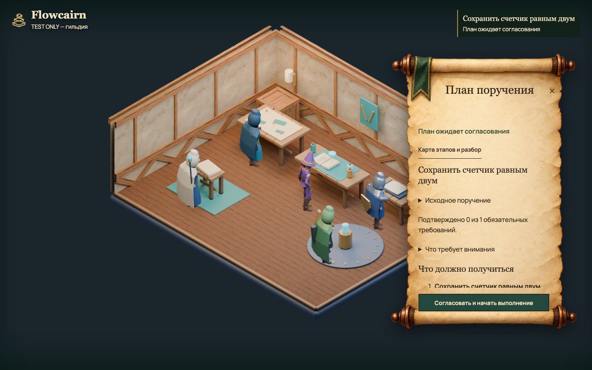

AI меняет код.
Вы видите, чем подтвержден результат.
Поручение, согласованный план, выполнение и проверка — в одном локальном инструменте. Разберите запись настоящего интерфейса по шагам.

Запись с подставными ответами AI. Executor, изменение файла, процесс проверки, отчеты и интерфейс настоящие. Внешний AI не вызывался. Переключение кадров ничего не исполняет.
Что стоит за этим кадром
Выберите узел: посмотрите его зависимости, статус и идентификаторы отчетов.
Это схема сохраненного плана, а не экран редактора Flowcairn. В продукте подробности доступны в книге диагностики. Порядок здесь следует записи; подписи «Зависит от» взяты из needs.
Ошибка не стала успехом
В первой попытке исполнитель записал 1. Проверка ожидала 2 и остановила успешное завершение. После исправления она прошла. Изменение файла на 3 затем сделало доказательство устаревшим.
| Попытка | Значение | Exit code | Итог |
|---|
Посмотреть запись целиком
Запись взаимодействия с текущим интерфейсом. Без звука; описание каждого момента доступно выше.
Попробуйте на своем проекте
npx flowcairnNode.js 22. Условия запуска на macOS и native Windows и фактический объем проверок — в инструкции установки.
План перед изменением кода
Согласуйте область записи и проверку результата.
—